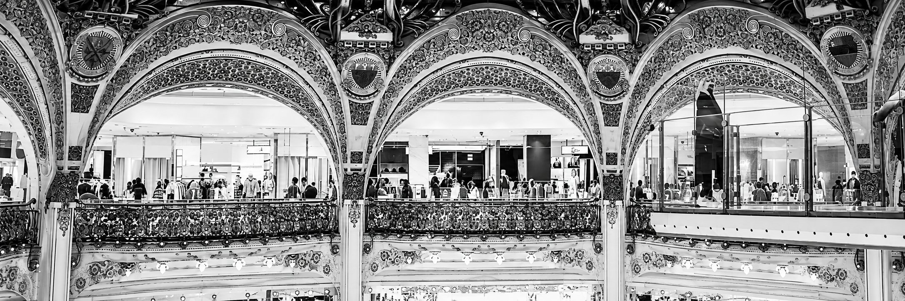

01. Made architecture
01 — À PROPOS
Créer des expériences intuitives et impactantes, du design à la stratégie produit.
Mon parcours s’est construit à la croisée du design, de l’expérience client et du pilotage de projets.
Pendant plus de dix ans, j’ai travaillé au contact des utilisateurs, des clients et des équipes, en développant une approche centrée sur les besoins, les usages et les objectifs business.
Aujourd’hui, je mets cette expérience au service du Product Management et du Product Ownership, avec une approche hybride entre compréhension utilisateur, structuration des besoins et coordination des parties prenantes.
01
USER DISCOVERY
Comprendre les besoins, usages, irritants et attentes des utilisateurs.
02
PROJECT MANAGEMENT
Structurer les projets, coordonner les parties prenantes et sécuriser les étapes clés.
03
UX & BRANDING
Concevoir des expériences cohérentes entre parcours, interfaces et identité.
04
BUSINESS & RETAIL
Relier expérience client, acquisition, conversion et objectifs business.
02 — PROJETS
02. Florosie
03. Retail to Product
04. Projet Epitech / Data
03 — EXPÉRIENCE
UNE EXPÉRIENCE À LA CROISÉE DU DESIGN, DU BUSINESS ET DU PRODUIT.
MADE ARCHITECTURE
Fondatrice & Directrice de projets
DISCOVERY & USER NEEDS
Analyse des besoins clients, compréhension des usages et identification des attentes pour définir les réponses les plus pertinentes.
Recueil et reformulation des besoins, échanges avec les parties prenantes et traduction des attentes en solutions concrètes.
PROJECT MANAGEMENT
Pilotage de projets de conception de bout en bout : cadrage, planning, priorisation, suivi des livrables et coordination des différentes phases.
Coordination de parties prenantes multiples, avec jusqu’à 15 interlocuteurs par projet et des budgets pouvant atteindre 300 k€.
UX / UI & DIGITAL
Conception de parcours utilisateurs, wireframes et interfaces en prenant en compte les usages, les besoins et les contraintes du projet.
Conception et évolution d’outils digitaux : arborescence, contenus, responsive desktop, tablette et mobile, puis validation.
BUSINESS
Développement commercial et gestion de projets jusqu’à 300 k€, de la qualification du besoin à la livraison, avec une approche centrée sur la valeur client et les objectifs business.
UNE EXPÉRIENCE AU CŒUR DE LA DISCOVERY, DE LA CONCEPTION DE SOLUTIONS ET DE LA COORDINATION PROJET.
POPUP HOUSE
Chargée de clientèle technique & fonctionnelle
DISCOVERY
Analyse de ~300 leads entrants/mois et qualification des besoins pour identifier les projets et opportunités à forte valeur.
Reformulation des problématiques pour identifier des solutions adaptées à chaque projet.
CONCEPTION DE SOLUTIONS
Analyse et traduction des besoins clients en solutions concrètes et réalisables.
Recherche du meilleur équilibre entre attentes utilisateurs, faisabilité technique et contraintes de production.
COORDINATION DE PROJET
Interface entre clients, équipes internes et production pour centraliser les informations et fluidifier les échanges.
Accompagnement des projets de la qualification du besoin jusqu’à leur mise en œuvre.
DESIGN & COMMUNICATION
Création de supports de communication, visuels et contenus.

UNE EXPÉRIENCE AU PLUS PRÈS DES UTILISATEURS, DE LA PERFORMANCE ET DE L’EXPÉRIENCE CLIENT.
RETAIL / EXPÉRIENCE CLIENT
Responsable commerciale & expérience client
Lily Rose / Galeries Lafayette / American Vintage
BUSINESS & PERFORMANCE
Développement du cross-selling et optimisation de l’expérience client : +25 à +30 % d’AOV.
Mise en place d'actions contribuant à ~60 % de fidélisation.
Adaptation des stocks et de l'offre selon les ventes, la saisonnalité et la météo.
OMNICHANNEL & E-COMMERCE
Pilotage de l’acquisition omnicanale et développement des ventes en ligne via les réseaux sociaux.
COMMUNICATION & COORDINATION
Participation au branding et à la création de supports de communication, visuels et contenus.
CUSTOMER EXPERIENCE
Écoute et analyse des besoins et comportements pour améliorer les recommandations et les parcours d’achat.
Adaptation de l’expérience selon les attentes, usages et profils des clients.
Figma
Jira

Notion

Photoshop
Illustrator
InDesign
Google Analytics

VS Code
Canva
ChatGPT
Claude
Gemini

Google Workspace
Figma
Jira
Notion
Photoshop
Illustrator
InDesign
Google Analytics
VS Code
Canva
ChatGPT
Claude
Gemini
Google Workspace
04 — RECOMMANDATIONS
CE QU’ON DIT DE MON TRAVAIL
Monsieur et Madame PAPIN - Clients de Made architecture
★★★★★
“Manon a su gagner ma confiance par son sérieux, son autonomie et sa capacité à prendre en charge les projets et les clients. Elle sait analyser précisément les besoins, identifier les problématiques et construire des solutions à la fois créatives, techniques et pragmatiques. Toujours impliquée et consciencieuse, elle se distingue par sa capacité à travailler en autonomie, son sens du détail et une véritable approche orientée problem solving. Une collaboratrice fiable, créative et capable de prendre des responsabilités rapidement.”
Madame GASTON - Directrice d’agence d’architecture
★★★★★
“Manon a rapidement compris nos besoins, nos contraintes et notre façon de vivre pour nous proposer des solutions créatives, pertinentes et adaptées. Elle a su nous accompagner dans nos choix en conciliant esthétique, contraintes techniques, durabilité et budget. De la conception au suivi du chantier, elle a parfaitement cadré et coordonné le projet de A à Z, avec beaucoup de rigueur. Un accompagnement clé en main qui nous a permis d’obtenir un résultat à la hauteur de nos attentes pour notre maison à Aix-en-Provence.”
Monsieur TOUATIOUI - Collaborateur chargé digital chez Popup House
★★★★★
“J'ai travaillé durant un an avec Manon au sein de l'entreprise PopUp House où elle occupait la double casquette d'architecte d'intérieur et de chargée de clientèle. Manon est une vraie professionnelle passionnée par son métier d'architecte d'intérieur et dispose d'une capacité d'adaptation très importante. Manon a su s'adapter aux méthodes de travail de PopUp House et assurer ses missions tout au long de l'année passée au sein de l'entreprise. Je recommande vivement.”
MANON DESCLAUX
LOCALISATION
Béziers • Montpellier • Disponible
pour déplacement
E-MAIL
manondesclaux.pro@gmail.com
TÉLÉPHONE
06 78 86 92 48